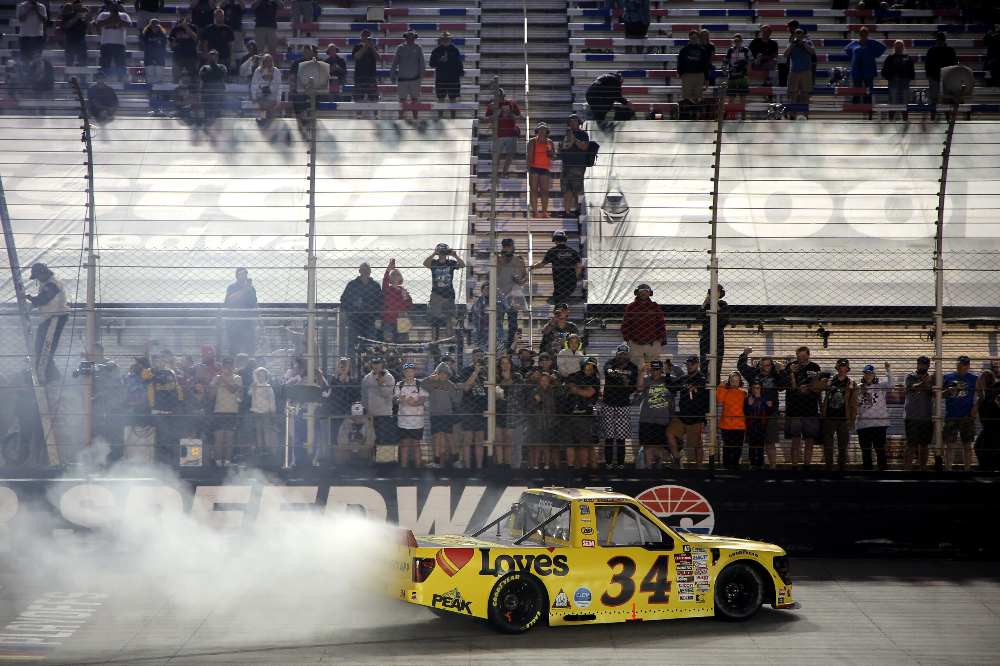

Layne Riggs remonta y se clasifica a la siguente ronda de los playoffs.
11/09
Tras un trompo en la primera vuelta, Rayne Riggs logra una remontada increible para ganar nuevamente en la trucks series
Riggs se pone como favorito a pelearle el titulo a Corey Heim